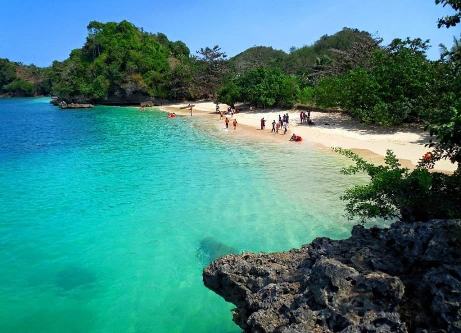

Menurut pengalaman saya setelah beberapa kali mendaki gunung, banyak pendaki yang tidak sampai tujuan alias tidak sampai puncak yang dituju. Saya juga pernah mengalami hal tersebut karena kurang persiapan. Kalo sudah terjadi begitu maka Cuma ada penyesalan. Tapi tenang saja saya akan bagi-bagi tips mendaki gunung untuk pemula yang harus di lakukan agar bisa sampai puncak. Oke langsung saja ke tips mendaki gunung bagi pemula :
1. Melatih otot kaki dan kesimbangan
2. Jaga Kesehatan
3. Perlengkapan yang harus di bawa Ketika Mendaki Gunung
4. Konsumsi Yang Harus Dibawa
5. Cara berjalan ketika mendaki
6. Jangan malu untuk meminta berhenti jika capek
7. Diusahakan tidak mengeluh
8. Jangan membuang sampah di gunung
9. Ikuti instruksi dan larangan petugas gunung
Pantai

Pantai merupakan salah satu destinasi liburan paling favorit para wisatawan. Apalagi di Indonesia begitu banyak pilihan pantai-pantai nan indah dan eksotis untuk dikunjungi. Tak heran pantai-pantai di Indonesia banyak diminati oleh wisatawan dari dalam ataupun luar negeri. Ada banyak yang dapat kamu lakukan saat liburan ke pantai, seperti snorkeling, diving, bermain pasir, atau hanya sekadar berjemur.
Agar liburan kamu di pantai semakin seru dan mengasikkan, 10 tips asik menikmati pantai ini patut kamu coba.
1. Memakai sunblock SPF tinggi
2. Outfit yang kece sekaligus nyaman
3. Kacamata hitam jangan ketinggalan
4. Berjemur di atas lautan pasir
5. Minum kelapa Muda.